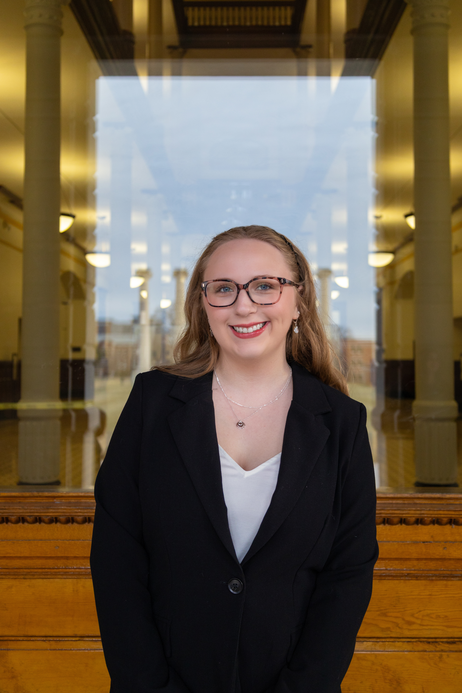

A LITTLE ABOUT ME
Hello, I'm Lorelei Skurzewski.
It all began in fifth grade when I borrowed my grandma’s phone to capture the flowers in her yard. From that moment, photography became my way of seeing and interpreting the world. Around that same time, I was always picking up any magazine I could find—on coffee tables, in waiting rooms, or arriving in the mail through subscriptions I eagerly read cover to cover. I was drawn not only to the stories, but to the way images, layout, and design worked together to communicate feeling and meaning.
Writing has always complemented my curiosity, but it was through photojournalism and magazine storytelling that I discovered how the two could exist in conversation, shaping narratives that feel both intentional and human. Now, as an undergraduate at the Missouri School of Journalism majoring in Journalism with an emphasis in Cross-Platform Editing and Producing and pursuing a minor in Art, I am focused on developing my photography, exploring design and visual storytelling, and creating work that connects people to the moments, stories, and details that often speak the loudest without words.